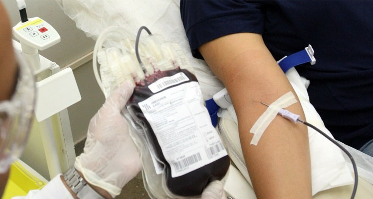
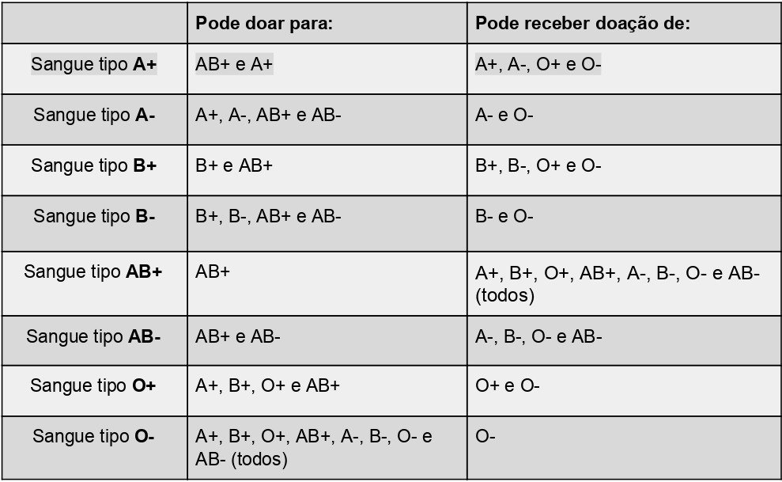

Doação de Sangue
O que é a doação de sangue?
A doação de sangue é um gesto de solidariedade que consiste em doar uma pequena quantidade de seu próprio sangue para salvar a vida de outras pessoas.

Requisitos necessários:
- Os doadores precisam ter entre 16 e 69 anos. Há uma ressalva para quem tem 16 e 17 anos: o menor de idade tem que estar acompanhado de pai ou mãe ou responsável legal;
- Pesar acima de 55 kg;
- Estar em boas condições de saúde, não estar gripado ou com outra infecção;
- Estar descansado(Ter uma boa noite de sono) e alimentado.
Intervalo entre as doações:
Mulheres: intervalo de 03 meses. Máximo 3 doações anuais;
Homens: intervalo de 02 meses. Máximo 4 doações anuais.
Impedimentos temporários
- Quem fez transfusão de sangue: 01 ano;
- Tatuagem: 01 ano;
- Quem fez uma cirurgias: De 06 meses a 01 ano;
- Parto normal: 06 meses;
- Dengue: Entre 01 mês a 06 meses após a cura;
- Doenças sexualmente transmissível- DST: 01 ano após a cura;
- Gripe: 02 semanas;
- Amamentação: parto ocorrido há mais de 01 ano;
- Medicação: a critério do médico;
- Piercing (oral e genital): 01 ano da retirada;
- Procedimentos endoscópicos): 06 meses.
Onde doar?
Em algum Hospital ou no Hemocentro da sua cidade, para saber o endereço Clique aqui!
Combinação de doação:
